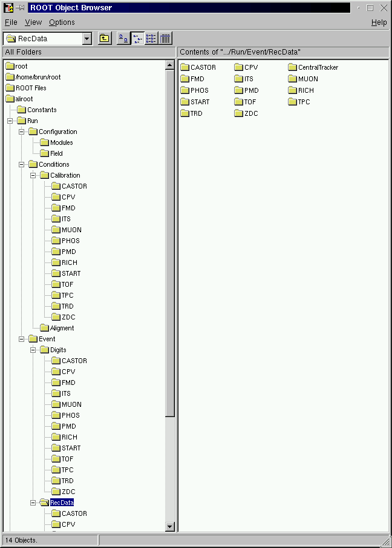

class TFolder: public TNamed
A TFolder object is a collection of objects and folders. Folders have a name and a title and are identified in the folder hierarchy by a "Unix-like" naming mechanism. The root of all folders is //root. New folders can be dynamically added or removed to/from a folder. The folder hierarchy can be visualized via the TBrowser. The Root folders hierarchy can be seen as a whiteboard where objects are posted. Other classes/tasks can access these objects by specifying only a string pathname. This whiteboard facility greatly improves the modularity of an application, minimizing the class relationship problem that penalizes large applications. Pointers are efficient to communicate between classes. However, one has interest to minimize direct coupling between classes in the form of direct pointers. One better uses the naming and search service provided by the Root folders hierarchy. This makes the classes loosely coupled and also greatly facilitates I/O operations. In a client/server environment, this mechanism facilitates the access to any kind of object in //root stores running on different processes. A TFolder is created by invoking the TFolder constructor. It is placed inside an existing folder via the TFolder::AddFolder method. One can search for a folder or an object in a folder using the FindObject method. FindObject analyzes the string passed as its argument and searches in the hierarchy until it finds an object or folder matching the name. When a folder is deleted, its reference from the parent folder and possible other folders is deleted. If a folder has been declared the owner of its objects/folders via TFolder::SetOwner, then the contained objects are deleted when the folder is deleted. By default, a folder does not own its contained objects. NOTE that folder ownership can be set - via TFolder::SetOwner - or via TCollection::SetOwner on the collection specified to TFolder::AddFolder Standard Root objects are automatically added to the folder hierarchy. For example, the following folders exist: //root/Files with the list of currently connected Root files //root/Classes with the list of active classes //root/Geometries with active geometries //root/Canvases with the list of active canvases //root/Styles with the list of graphics styles //root/Colors with the list of active colors For example, if a file "myFile.root" is added to the list of files, one can retrieve a pointer to the corresponding TFile object with a statement like: TFile *myFile = (TFile*)gROOT->FindObject("//root/Files/myFile.root"); The above statement can be abbreviated to: TFile *myFile = (TFile*)gROOT->FindObject("/Files/myFile.root"); or even to: TFile *myFile = (TFile*)gROOT->FindObjectAny("myFile.root"); In this last case, the TROOT::FindObjectAny function will scan the folder hierarchy starting at //root and will return the first object named "myFile.root". Because a string-based search mechanism is expensive, it is recommended to save the pointer to the object as a class member or local variable if this pointer is used frequently or inside loops./*  */
Function Members (Methods)
public:
| TFolder() | |
| TFolder(const char* name, const char* title) | |
| virtual | ~TFolder() |
| void | TObject::AbstractMethod(const char* method) const |
| virtual void | Add(TObject* obj) |
| TFolder* | AddFolder(const char* name, const char* title, TCollection* collection = 0) |
| virtual void | TObject::AppendPad(Option_t* option = "") |
| virtual void | Browse(TBrowser* b) |
| static TClass* | Class() |
| virtual const char* | TObject::ClassName() const |
| virtual void | Clear(Option_t* option = "") |
| virtual TObject* | TNamed::Clone(const char* newname = "") const |
| virtual Int_t | TNamed::Compare(const TObject* obj) const |
| virtual void | Copy(TObject&) const |
| virtual void | TObject::Delete(Option_t* option = "")MENU |
| virtual Int_t | TObject::DistancetoPrimitive(Int_t px, Int_t py) |
| virtual void | TObject::Draw(Option_t* option = "") |
| virtual void | TObject::DrawClass() constMENU |
| virtual TObject* | TObject::DrawClone(Option_t* option = "") constMENU |
| virtual void | TObject::Dump() constMENU |
| virtual void | TObject::Error(const char* method, const char* msgfmt) const |
| virtual void | TObject::Execute(const char* method, const char* params, Int_t* error = 0) |
| virtual void | TObject::Execute(TMethod* method, TObjArray* params, Int_t* error = 0) |
| virtual void | TObject::ExecuteEvent(Int_t event, Int_t px, Int_t py) |
| virtual void | TObject::Fatal(const char* method, const char* msgfmt) const |
| virtual void | TNamed::FillBuffer(char*& buffer) |
| virtual const char* | FindFullPathName(const char* name) const |
| virtual const char* | FindFullPathName(const TObject* obj) const |
| virtual TObject* | FindObject(const char* name) const |
| virtual TObject* | FindObject(const TObject* obj) const |
| virtual TObject* | FindObjectAny(const char* name) const |
| virtual Option_t* | TObject::GetDrawOption() const |
| static Long_t | TObject::GetDtorOnly() |
| virtual const char* | TObject::GetIconName() const |
| TCollection* | GetListOfFolders() const |
| virtual const char* | TNamed::GetName() const |
| virtual char* | TObject::GetObjectInfo(Int_t px, Int_t py) const |
| static Bool_t | TObject::GetObjectStat() |
| virtual Option_t* | TObject::GetOption() const |
| virtual const char* | TNamed::GetTitle() const |
| virtual UInt_t | TObject::GetUniqueID() const |
| virtual Bool_t | TObject::HandleTimer(TTimer* timer) |
| virtual ULong_t | TNamed::Hash() const |
| virtual void | TObject::Info(const char* method, const char* msgfmt) const |
| virtual Bool_t | TObject::InheritsFrom(const char* classname) const |
| virtual Bool_t | TObject::InheritsFrom(const TClass* cl) const |
| virtual void | TObject::Inspect() constMENU |
| void | TObject::InvertBit(UInt_t f) |
| virtual TClass* | IsA() const |
| virtual Bool_t | TObject::IsEqual(const TObject* obj) const |
| virtual Bool_t | IsFolder() const |
| Bool_t | TObject::IsOnHeap() const |
| Bool_t | IsOwner() const |
| virtual Bool_t | TNamed::IsSortable() const |
| Bool_t | TObject::IsZombie() const |
| virtual void | ls(Option_t* option = "") constMENU |
| void | TObject::MayNotUse(const char* method) const |
| virtual Bool_t | TObject::Notify() |
| void | TObject::Obsolete(const char* method, const char* asOfVers, const char* removedFromVers) const |
| virtual Int_t | Occurence(const TObject* obj) const |
| static void | TObject::operator delete(void* ptr) |
| static void | TObject::operator delete(void* ptr, void* vp) |
| static void | TObject::operator delete[](void* ptr) |
| static void | TObject::operator delete[](void* ptr, void* vp) |
| void* | TObject::operator new(size_t sz) |
| void* | TObject::operator new(size_t sz, void* vp) |
| void* | TObject::operator new[](size_t sz) |
| void* | TObject::operator new[](size_t sz, void* vp) |
| virtual void | TObject::Paint(Option_t* option = "") |
| virtual void | TObject::Pop() |
| virtual void | TNamed::Print(Option_t* option = "") const |
| virtual Int_t | TObject::Read(const char* name) |
| virtual void | RecursiveRemove(TObject* obj) |
| virtual void | Remove(TObject* obj) |
| void | TObject::ResetBit(UInt_t f) |
| virtual void | SaveAs(const char* filename = "", Option_t* option = "") constMENU |
| virtual void | TObject::SavePrimitive(ostream& out, Option_t* option = "") |
| void | TObject::SetBit(UInt_t f) |
| void | TObject::SetBit(UInt_t f, Bool_t set) |
| virtual void | TObject::SetDrawOption(Option_t* option = "")MENU |
| static void | TObject::SetDtorOnly(void* obj) |
| virtual void | TNamed::SetName(const char* name)MENU |
| virtual void | TNamed::SetNameTitle(const char* name, const char* title) |
| static void | TObject::SetObjectStat(Bool_t stat) |
| virtual void | SetOwner(Bool_t owner = kTRUE) |
| virtual void | TNamed::SetTitle(const char* title = "")MENU |
| virtual void | TObject::SetUniqueID(UInt_t uid) |
| virtual void | ShowMembers(TMemberInspector& insp) |
| virtual Int_t | TNamed::Sizeof() const |
| virtual void | Streamer(TBuffer& b) |
| void | StreamerNVirtual(TBuffer& b) |
| virtual void | TObject::SysError(const char* method, const char* msgfmt) const |
| Bool_t | TObject::TestBit(UInt_t f) const |
| Int_t | TObject::TestBits(UInt_t f) const |
| virtual void | TObject::UseCurrentStyle() |
| virtual void | TObject::Warning(const char* method, const char* msgfmt) const |
| virtual Int_t | TObject::Write(const char* name = 0, Int_t option = 0, Int_t bufsize = 0) |
| virtual Int_t | TObject::Write(const char* name = 0, Int_t option = 0, Int_t bufsize = 0) const |
protected:
| virtual void | TObject::DoError(int level, const char* location, const char* fmt, va_list va) const |
| void | TObject::MakeZombie() |
Data Members
public:
| enum TObject::EStatusBits { | kCanDelete | |
| kMustCleanup | ||
| kObjInCanvas | ||
| kIsReferenced | ||
| kHasUUID | ||
| kCannotPick | ||
| kNoContextMenu | ||
| kInvalidObject | ||
| }; | ||
| enum TObject::[unnamed] { | kIsOnHeap | |
| kNotDeleted | ||
| kZombie | ||
| kBitMask | ||
| kSingleKey | ||
| kOverwrite | ||
| kWriteDelete | ||
| }; |
protected:
| TCollection* | fFolders | pointer to the list of folders |
| Bool_t | fIsOwner | true if folder own its contained objects |
| TString | TNamed::fName | object identifier |
| TString | TNamed::fTitle | object title |
Class Charts
{kind=link}
{kind=link}
{kind=link}
{kind=link}
Function documentation
TFolder()
TFolder(const char* name, const char* title)
TFolder * AddFolder(const char* name, const char* title, TCollection* collection = 0)
Create a new folder and add it to the list of folders of this folder, return a pointer to the created folder. Note that a folder can be added to several folders. If collection is non NULL, the pointer fFolders is set to the existing collection, otherwise a default collection (Tlist) is created. Note that the folder name cannot contain slashes.
const char * FindFullPathName(const char* name) const
Return the full pathname corresponding to subpath name if the node is gROOT->GetRootFolder() and return a relative path otherwise. The returned path will be re-used by the next call to FindFullPathName().
const char * FindFullPathName(const TObject* obj) const
Return the full pathname corresponding to subpath name. The returned path will be re-used by the next call to FindFullPathName().
TObject * FindObject(const char* name) const
Search object identified by name in the tree of folders inside this folder. Name may be of the forms: A, Specify a full pathname starting at the top ROOT folder //root/xxx/yyy/name B, Specify a pathname starting with a single slash. //root is assumed /xxx/yyy/name C, Specify a pathname relative to this folder xxx/yyy/name name
TObject * FindObjectAny(const char* name) const
Return a pointer to the first object with name starting at this folder.
void ls(Option_t* option = "") const
List folder contents If option contains "dump", the Dump function of contained objects is called. If option contains "print", the Print function of contained objects is called. By default the ls function of contained objects is called. Indentation is used to identify the folder tree. The if option contains a <regexp> it be used to match the name of the objects.
Int_t Occurence(const TObject* obj) const
Return occurence number of object in the list of objects of this folder. The function returns the number of objects with the same name as object found in the list of objects in this folder before object itself. If only one object is found, return 0.
void SaveAs(const char* filename = "", Option_t* option = "") const
Save all objects in this folder in filename. Each object in this folder will have a key in the file where the name of the key will be the name of the object.
void SetOwner(Bool_t owner = kTRUE)
Set ownership. If the folder is declared owner, when the folder is deleted, all the objects added via TFolder::Add are deleted via TObject::Delete, otherwise TObject::Clear is called. NOTE that folder ownership can be set: - via TFolder::SetOwner - or via TCollection::SetOwner on the collection specified to TFolder::AddFolder